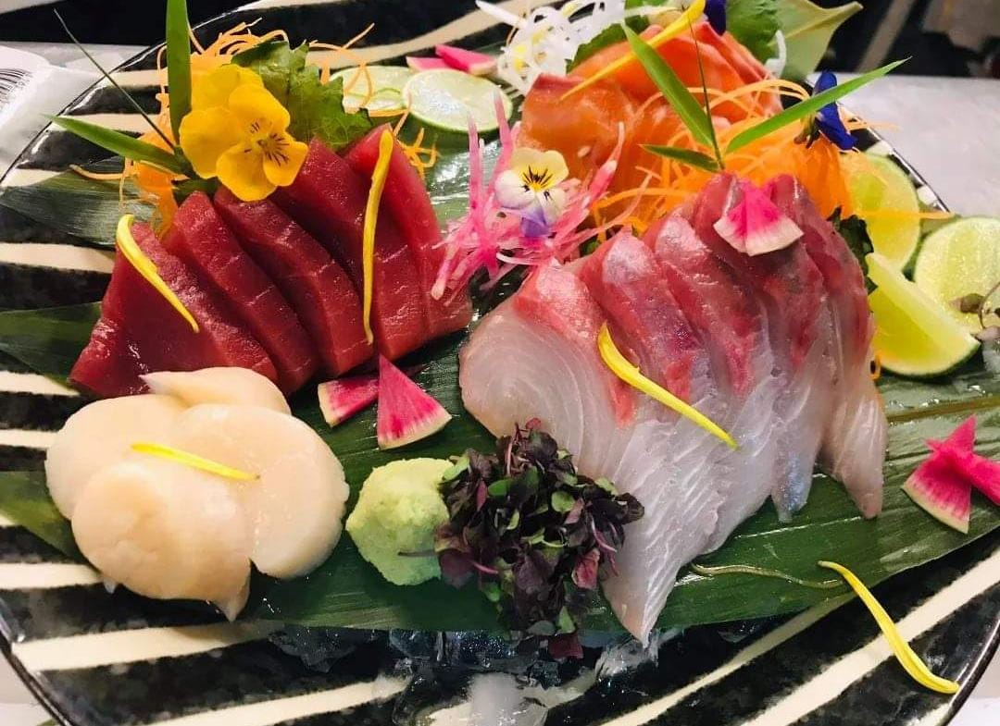

Udon Izakaya Tsumugui
"Sashimi".

Es un platillo de pescado fresco, el cual tiene 4 proteínas diferentes
Atun
Salmon
Kampachi
Callo de hacha
Todo esto va sobre una cama de hielo frappé para mantener la frescura del alimento, lleva unas hojas d bambú en la base y se debe crear un contraste armónico entre cada color de los ingredientes, como son las flores, rábanos, tzumas y brotes....
Todo lo que está sobre las hojas de bambú se puede comer, ya que las flores y brotes son orgánicos